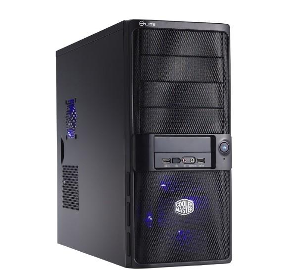

Unidad central de procesamiento, es un componente de hardware y la unidad computacional central de un servidor. Los servidores y otros dispositivos inteligentes convierten los datos en señales digitales y realizan operaciones matemáticas en ellos.
